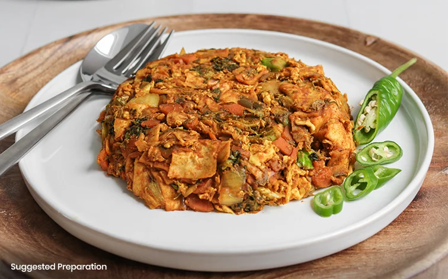
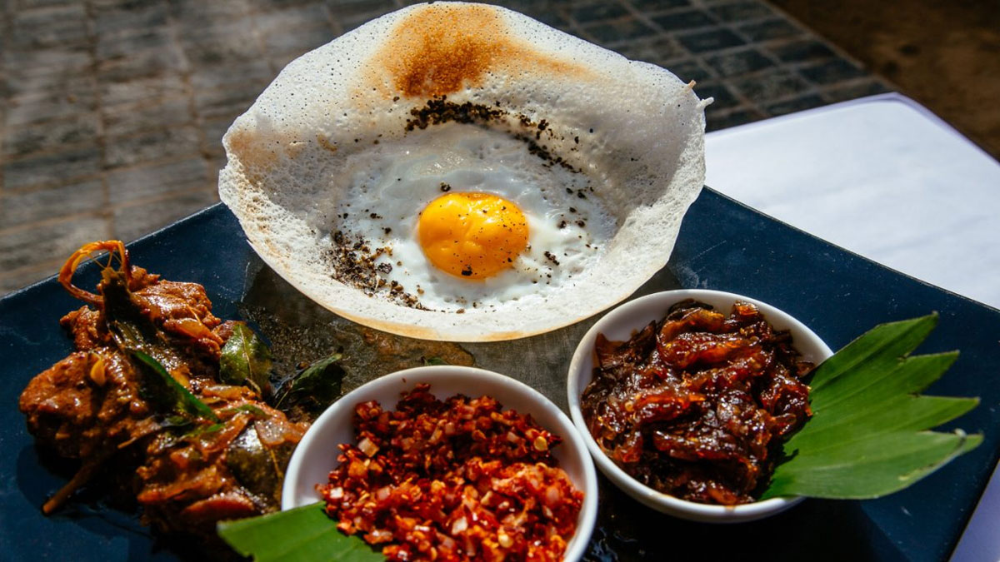

01. Lamprais
Banana Leaf Bundles of Joy: Unwrapping Lamprais
The food scene of Sri Lanka is quite unique because their culture has been intertwined with influences from Britain, Portugal, Netherlands and even Malaysia. From 1658 until 1796 Sri Lanka was colonised by the Netherlands, during this period a ethnic group known as the Dutch Burghers settled in Sri Lanka. The Dutch Burgher's were decendents from Dutch, Portuguese and Sri Lankan ancestry who introduced a dish that would later become Lamprais.
The etymology of Lamprais can be traced back to the Dutch word lomprijst or “parcel of food”. This is essentially Sri Lankan comfort food at its best! Each time I eat Lamprais it reminds me of my heritage and feeds my soul. The cool thing about Lamprais is that the dish is flexible and varies in the ingredients used depending on the family. The components of Lamprais used whenever my mum makes it include, Seeni Sambol (spicy and sweet caramelised onion relish), Wambotu Moju (eggplant pickle), a variety of short grain rice called Samba cooked in beef stock, Fish Cutlets (croquettes with tuna and potato filling) and Chicken Curry all wrapped up and steamed in banana leaves. The inclusion of the banana leaf wrapping imparts a unique aroma and taste to the dish, adding a subtle earthy note.
💡Time-Saving Tip
Short on time? Many of the accompaniments for Lamprais can be prepared in advance! Make the seeni sambol, cutlets, eggplant moju, and blachan on different days and store them in the freezer until you're ready to assemble the final dish. This makes the cooking process much more manageable!
| Category | Servings | Prep Time | Cook Time |
|---|---|---|---|
| Special Occassions | 4 People | 2 - 3 hours | 2 - 3 hours |
Recipe
Click on a recipe name to expand and view details |
Ingredients | Method
As you check off each step on a recipe, the recipe name will turn green to indicate a recipe being finished |
|---|---|---|
02. Kottu
Kottu: When Leftovers Become a Symphony of Flavour
Kottu originated in the Tamil regions of Sri Lanka in the 1970s, likely in Trincomalee or Batticaloa. Throughout Sri Lanka, the distinctive sound of bench scrapers chopping and mixing roti with vegetables on metal cooktops is like music to the ears as a feast is about to arrive.
As a Sri Lankan, I can attest that this flavourful, inexpensive dish is arguably one of Sri Lanka's hidden treasures, one I find myself often craving. The humble origins of this dish highlight how ingenuity leads to delicious results. Kottu is a testament to how simple ingredients, when combined with creativity and skill, can create a meal that is both satisfying and full of character. It’s a dish that brings people together, whether enjoyed at a bustling street stall or made at home with family and friends.

| Category | Servings | Prep Time | Cook Time |
|---|---|---|---|
| Street Food | 2 - 3 | 10 - 15 minutes | 5 - 10 minutes |
| Ingredients | Method |
|---|---|
|
|
03. Egg Hoppers
Egg Hoppers: The Perfect Morning Bowl That's Worth the Wait
Egg hoppers, known locally as "biththara appa," represent the pinnacle of Sri Lankan breakfast cuisine. These bowl-shaped crepes with their signature crispy edges and soft, spongy centers have been gracing Sri Lankan tables for centuries. The exact origins of where this dish came from is unknown but likely evolving from South Indian influence during ancient trade connections. What makes hoppers truly special isn't just their unique shape created by the specialized hopper pan (appachatti), but for the patient fermentation process that transforms simple rice flour and coconut milk into something magical.
The secret to authentic hoppers lies in the overnight fermentation of the batter, where natural yeasts work their magic to create that distinctive tangy flavour and airy texture. This fermentation process, combined with the swirling technique in the curved pan, produces hoppers with lace-like crispy edges that shatter at first bite, while the center remains tender enough to cradle a perfectly cooked yet runny egg. For Sri Lankans, hoppers aren't just breakfast - they're a weekend ritual, a comfort food that brings families together around the kitchen as the batter sizzles and the aroma fills the home. The interplay of textures and that subtle sour note from fermentation makes each hopper a small masterpiece that transforms the simple act of breakfast into something truly special.

| Category | Servings | Prep Time | Cook Time |
|---|---|---|---|
| Breakfast | 5 - 6 | 3 - 4 hours | 2 - 5 Minutes |
| Ingredients | Method |
|---|---|
|
|